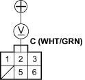

- Start the engine. Hold the engine at 3,000 rpm (min-1) with no load (in Neutral) until the radiator fan comes on then let it idle.
- Raise the engine speed to 2,000 rpm (min-1) and hold it there.
- Turn the headlights (high beam) on, and measure voltage at the under-hood fuse/relay box terminal.
Is the voltage between 13.9 and 15.1 V?
YES - Go to step 9.
NO - Repair the alternator components (see page 4-29). 
- Read the amperage at 13.5 V.
NOTE: Adjust the voltage by turning the blower motor, rear window defogger, brake lights, etc. ON.
Is the amperage 60A or more?
YES - Alternator/regulator operation is OK.
NO - Repair the alternator components (see page 4-29).
Alternator Control System Test
- Check for proper operation of the ELD by checking the MIL (see page 11-3).
- Disconnect the engine wire harness 6P connector from the starter sub-harness 6P connector.
- Start the engine, and turn the headlights (high beam) ON.
- Measure voltage between the engine wire harness 6P connector terminal No. 2 and the positive terminal of the battery.
BATTERY

ENGINE WIRE HARNESS 6P CONNECTOR
Wire side of female terminals
Is there 1 V or less?
YES - Go to step 8.
NO - Go to step 5.
- Turn the headlights and ignition switch OFF.
- Disconnect ECM connector B (24P).